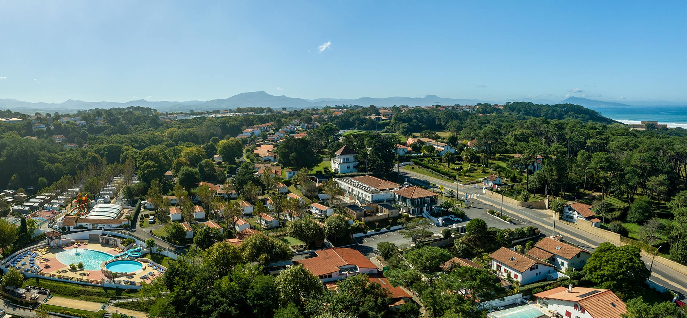

Hasiera
Hasiera
ARRIGORRIAGA KANPINA
EUKAL KANPINEN HANDIENA

Arrigorriagako kanpina ingurune natural eta lasaia eskaintzen du,
deskonektatu nahi dutenentzat aproposa.
Instalazio erosoekin eta aire zabaleko jardueretarako sarbidearekin, ezin
hobea da naturaz gozatzeko, hiritik gehiegi urrundu gabe.
Arrigorriagako kanpina leku ezin hobea da naturaz eta lasaitasunaz
gozatzeko, eta espazio erosoak eskaintzen ditu kanpatzeko eta inguruak
esploratzeko.
Erreserbak
Zerbitzuak
Kontaktatu